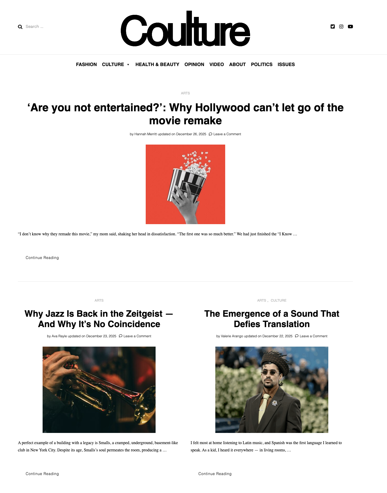
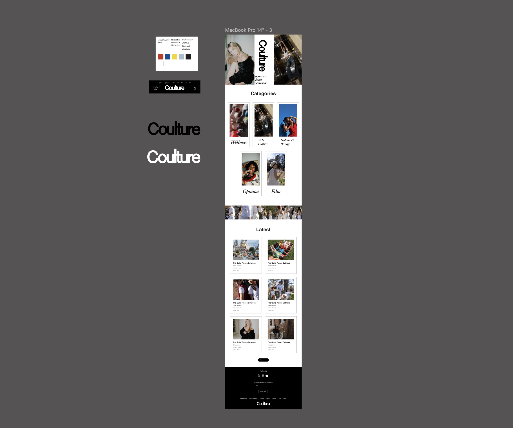
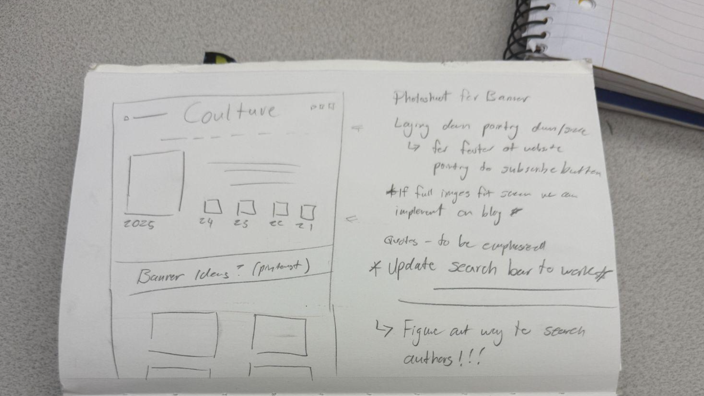
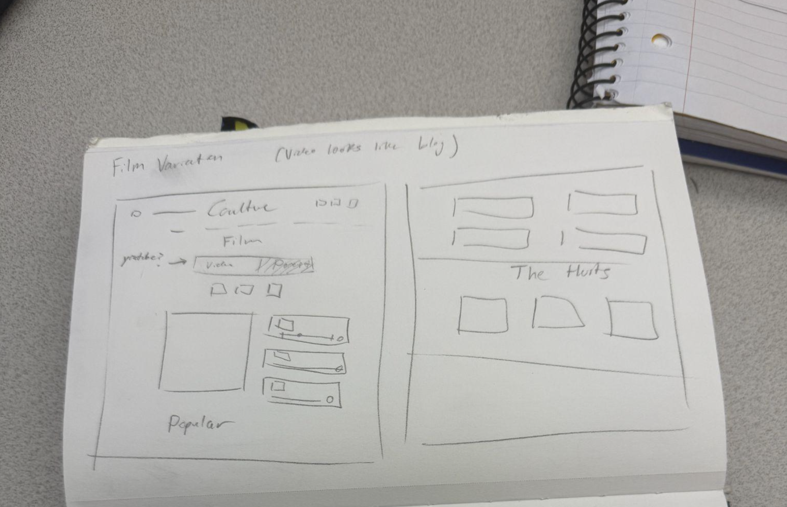
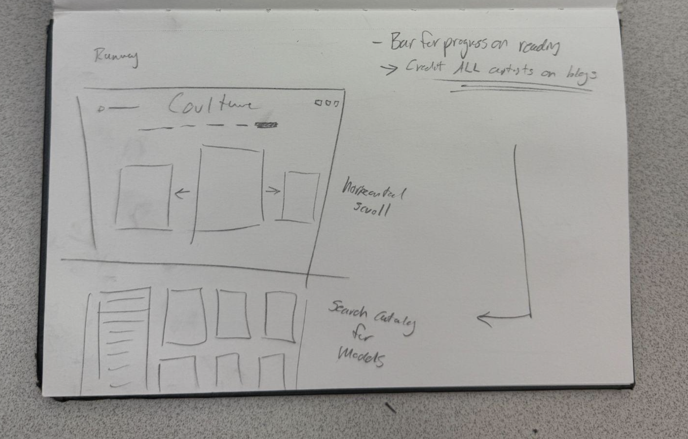
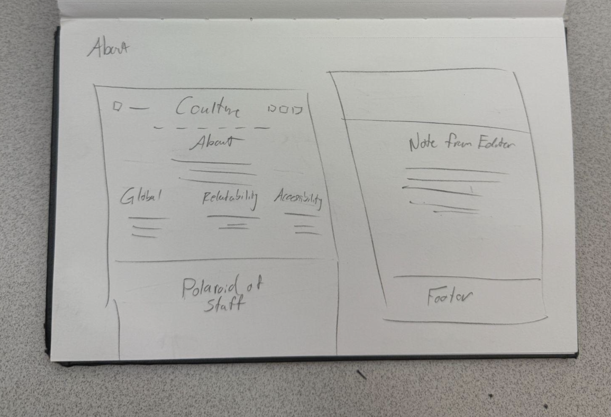
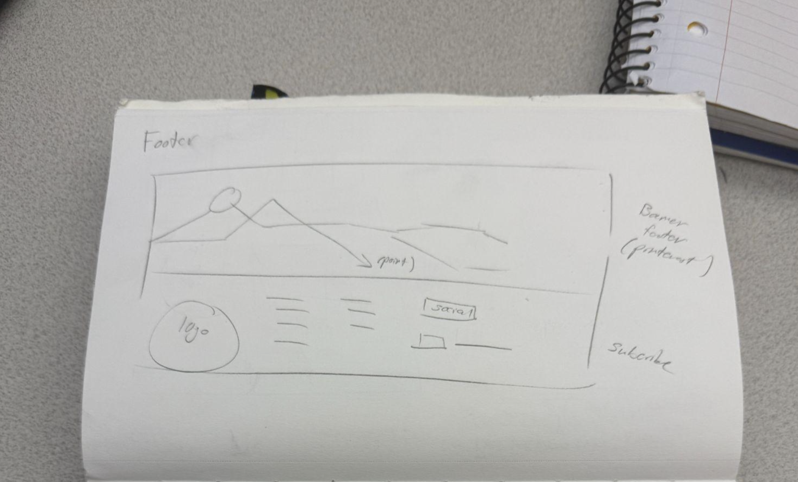
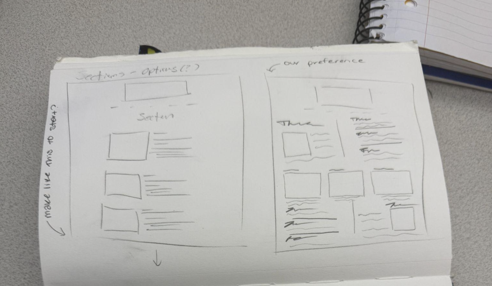
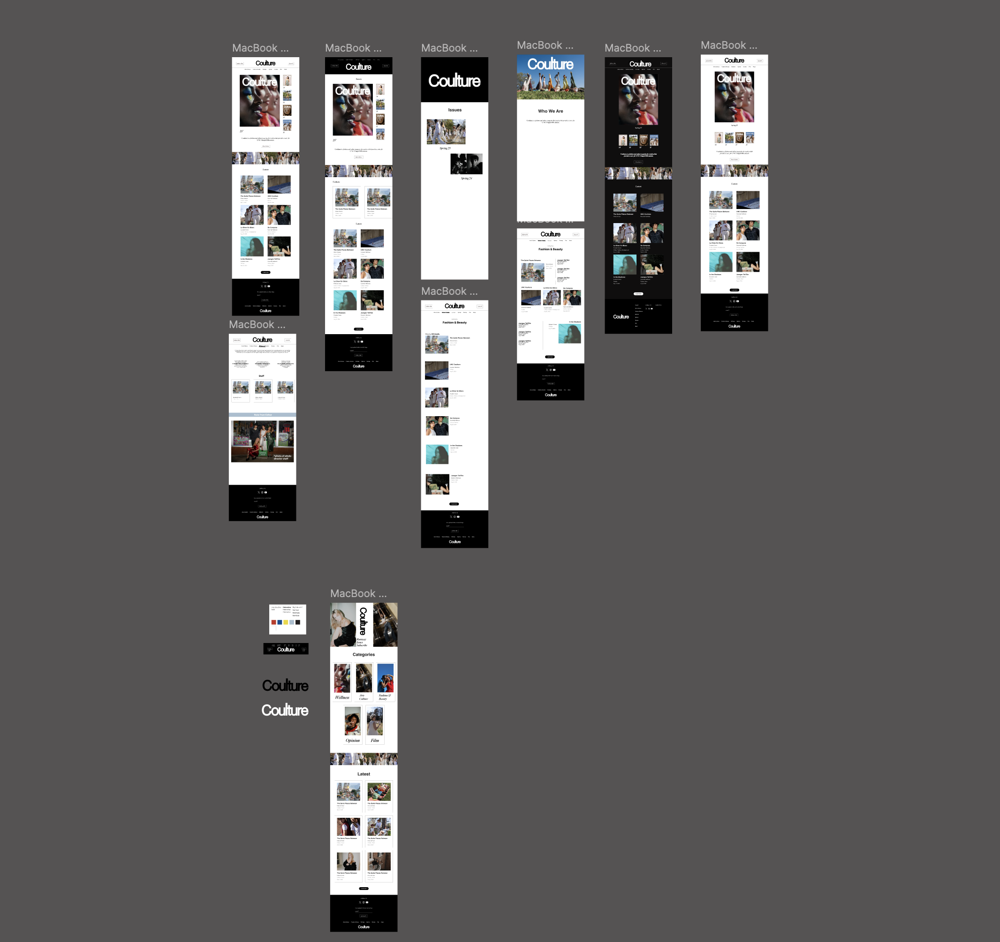
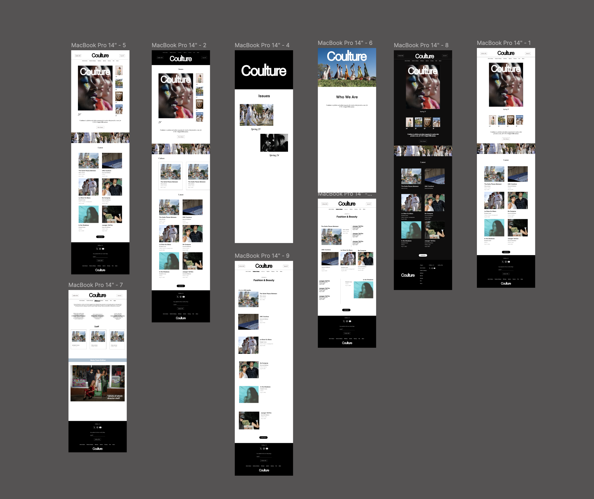

Redesigning and rebuilding UNC Chapel Hill's student fashion magazine — from blog to editorial platform — as both the lead designer and the developer who shipped it live.
Unlike most design projects — I didn't hand this off. I designed it and built it live.
Coulture is UNC Chapel Hill's student-run fashion and culture magazine. As Web Director, I led a full redesign of coulture.org — transforming a site that felt like a personal blog into something that matched the editorial ambition of the print publication and the visual standard of magazines like Interview, Vogue, and SCAD Manor.
This wasn't a concept project. Every design decision was implemented directly in WordPress, live on the real site. I ran stakeholder meetings with the Editors-in-Chief and Managing Editor, iterated through hand-drawn sketches, and shipped updates against a real November 7th deadline.
"We want to elevate the current Coulture website so it's more of a traditional news site and less like a blog site. Professional — but still unique."
Two fonts and a logo. Everything else — the visual direction, layout system, color decisions, page structure, and brand personality — was built from scratch through research, iteration, and stakeholder collaboration.

Before — Blog-style, cluttered, no hierarchy

After — Editorial, bold, magazine-grade
Overlapping categories (Opinion + Politics, Video + Film) made the nav cluttered and unintuitive for new visitors.
Mixed image sizes, uneven margins, and misaligned content made pages feel unfinished rather than editorial.
No issue cover featured, no sneak peek content — the most important real estate was advertising nothing.
Broken search bar, no author search, no reading progress bar, no subscription button in the footer.
Ran meetings with the EICs and Managing Editor to align on vision, gather feedback on initial mockups, and define what "professional but unique" meant for Coulture specifically. Documented every decision and open question in shared meeting notes.
Studied SCAD Manor, Interview Magazine, Bricks Magazine, Platform Mag, and a curated collaborative Pinterest board. Identified editorial web design patterns — bold typography, clean grids, distinct runway sections — and mapped them to Coulture's brand guidelines.
Sketched multiple layout variations for every key page — Homepage, Film, Runway, About, and Footer — exploring content hierarchy and navigation structure before touching WordPress.
Built every design decision into the live site — restructured navigation, redesigned homepage, fixed footer, added subscription functionality, standardized image sizing, and implemented the new Runway section. No handoff — I designed and shipped it myself.
Continued refining based on EIC feedback across the semester, delegating smaller tasks to the web team while owning the overall redesign direction and quality bar.
Before touching WordPress, every key page got a hand-drawn layout exploration — crucial for a stakeholder-driven project where alignment on structure needed to happen in meetings before committing development time to any direction.







Most redesign projects come with a brand kit. This one came with Helvetica, Big Caslon, and the Coulture wordmark. Everything else was a design decision I had to make — color palette, layout system, category card style, homepage hierarchy, footer treatment, and the bold black-background direction that defines the after.
The redesign went through multiple iterations. Each one was presented to the EICs and managing editor, refined based on feedback, and moved closer to something that felt less like a student blog and more like a publication that could sit alongside Interview or SCAD Manor.

Combined Opinion/Politics, renamed Video to Film, added Runway + Fashion & Beauty + Wellness. Removed Health. Cleaner, more editorial hierarchy.
Standardized image sizing, added issue cover placement, cleaner margins, aligned typography, removed text previews in favor of clean captions.
New dedicated page for photoshoot editorial content — horizontal scroll layout with model catalog integration, fully separate from article-based sections.
Polaroid-style staff photos, editorial pillars, and an interactive Letter from the Editor updated each year by the EIC.
Added C logo, consolidated subscribe + follow links, two-column page layout. Footer now functions as a proper brand anchor.
Added colorful touch to dropdown navigation per EIC request — a small but deliberate brand expression moment that elevated the site's personality.
This project was built and iterated live on the real site — coulture.org. There was no staging environment. The before no longer exists because I shipped over it. That's the nature of being both the designer and the developer: you move fast, you make it real, and the finished product is the proof.
"The goal is an elegant, bold, and timeless image. Don't be afraid to push the boundaries and fashion a unique design that reflects your personal style. Express yourself."— Coulture 2026 Brand Guidelines, EIC Direction
This project stands out in my portfolio because I wasn't just the designer handing off specs — I was responsible for making it real. That meant understanding WordPress constraints as I designed, making judgment calls when EIC feedback and platform capabilities didn't perfectly align, and shipping on a deadline without a developer safety net.
Running meetings with EICs, documenting decisions, and translating editorial vision into design and then into code requires a kind of thinking that's close to what product designers do every day in a professional environment. This is the project where I learned what it actually means to own something end to end.
See the full prototype and design files